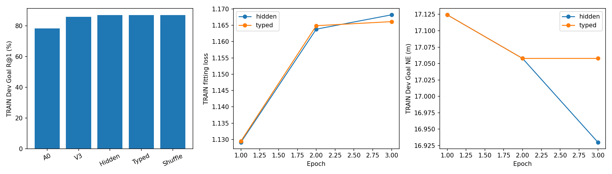
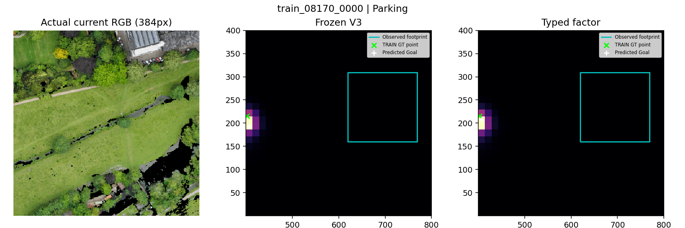
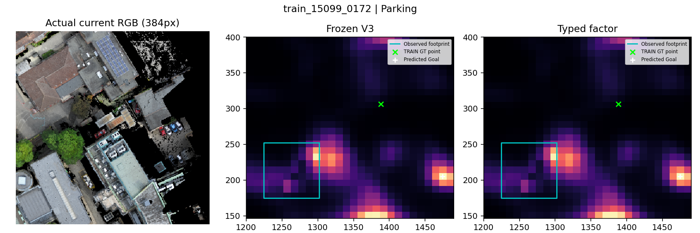
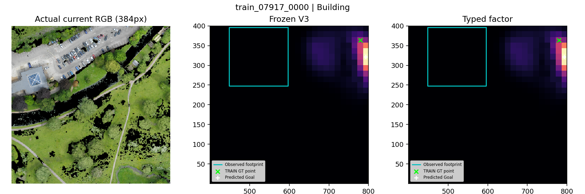
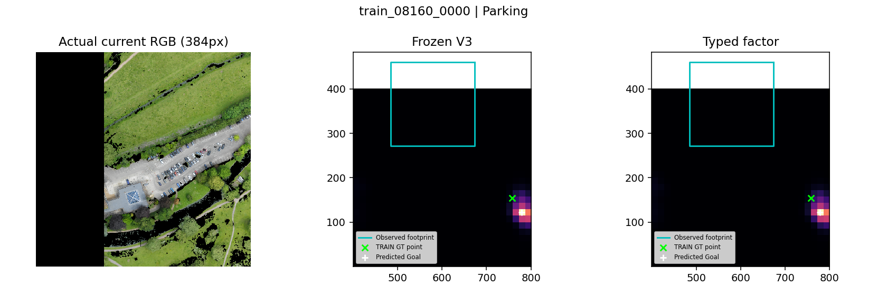
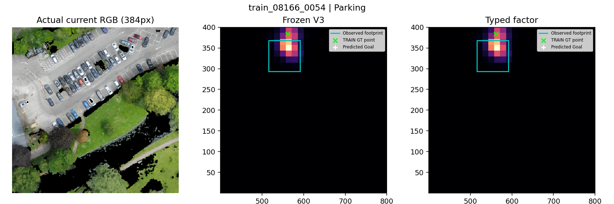
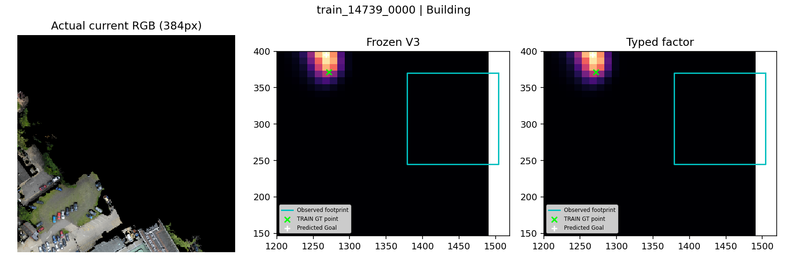

未验证独立收益；不是导航SR。RGB为真实384px观测，GT点只在事后地图显示，不是像素实例框。
中文报告
A small parking lot between two Causewayside buildings, one triangular and the other rectangular, the rectangular located just beside The Fen Causeway footpath.

[
{
"token": 22,
"phrase": "The Fen Causeway footpath",
"kind": "near",
"raw_relation": "beside",
"frame": "unspecified",
"public_ids": [],
"anchors": []
}
]Small parking section partially cut off by the edge of the map, that has a gray van on top of it, facing a building with a light green stacked roof that is within a larger beige building with a gray roof off Hills Road

[]
The building thats back side shares a wall with The Scholars Gaden. It has six green, four blue, and multiple yellow and white bins against the wall behind it as well as a white utility van. The roof has different styles and types beside each other including a round tundra roof a roof of twelve gray squares in a box shape and a light blue green house like roof/ room.

[]
On the right side of The Fen Causeway, this parking lot has several cars, some blue , parked in it.

[
{
"token": 12,
"phrase": "several cars",
"kind": "contains",
"raw_relation": "in",
"frame": "unspecified",
"public_ids": [],
"anchors": []
}
]A large area of a parking lot with one dark blue van on it, that is to the right of the graduate Cambridge building, on the edge of the map

[]
Two story White House with a gray roof, that is next to the Regent Street Dental Surgery building off Regent Street near the edge of the map

[]